The echogram is the main part of the LSSS display. It is divided into two parts: the pelagic echogram and the bottom echogram. The difference between these two echograms is the vertical representation. In the pelagic echogram the vertical corresponds to depth, whereas in the bottom echogram the vertical corresponds to distance from the bottom. In both echograms, the vertical axis is directed downwards.
The scrollbar below the echogram shows the location and extent of the visible part of the echogram relative to the total range of data selected in [Survey configuration - Data files].
The echogram images are continually updated while pings are read from the data files. When the data loading mode is set to BROWSE, the width of the echogram image decides how many pings that will be read from file and used in computations. At most one ping corresponding to each pixel column will be used. In the DETAIL data loading mode, all pings will be used in the computations, but still only one ping will be used for each pixel column. Vertically, however, the samples corresponding to one pixel are averaged.
Different ways to navigate in the echogram:
See also the section in keyboard shortcuts.
The items in the echogram context menu are listed below. Some overlays have specialized context menus.
The toolbar button
 can be used to toggle on and off the echogram tooltip. The tooltip displays information about ping and sample
pointed at with the mouse.
can be used to toggle on and off the echogram tooltip. The tooltip displays information about ping and sample
pointed at with the mouse.
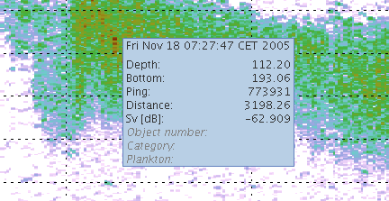
The object number refers to the Scatter database table. Category and plankton are results of categorization and plankton inversion during preprocessing.
The contents of the echogram tooltip can be configured in the echogram configuration. Some overlays have specialized tooltips.
The colorbar to the right of the echogram shows the mapping between the colors in the echogram image and signal strength,
Sv, measured in dB.
The thresholds on the colorbar decide which samples that are included in the sA integrations and other computations.
The lower threshold is always active, while the upper threshold can be activated through the colorbar context menu
(when the checkbox "Clip values above" is unchecked).
The threshold response view shows how sA integration
depends on the thresholds.
Sample values outside the threshold range are shown in white in the echogram.
The threshold values can be set either by the colorbar context menu, or by dragging the threshold indicators in the colorbar.
Different color scales can be selected in the colorbar context menu. If preprocessing with categorization or plankton inversion is done, the colorbar context menu will also contain special color scales for displaying automatically detected categories.
Conditional masking is accessed via the colorbar context menu and can be used to exclude or include specific categories from results of the categorization module or the plankton inversion module.
The conditional mask is displayed as an echogram overlay, and is converted to frequency-dependent deletion of data before storing to the database.
Located below the colorbar are one or more buttons for settings the lower threshold. These buttons can be configured in [Survey Configuration - Miscellaneous].
When clicking these buttons, the category assignments to the selected region in the Interpretation module is changes as follows:
Both the pelagic and the bottom echograms are organized as a background picture with several overlays stacked on top of it. Each overlay can be turned on or off in the configuration dialog for the echograms.
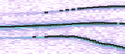
This overlay displays the targets detected by BB TS(f) module. A gray area marks a depth range identified at an individual target. The back line indicates the depth of the target's maximal target strength.
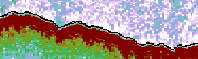
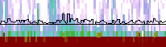
This overlay displays the detected bottom as two black lines. One line shows the detected bottom for the current frequency. The other line shows the coordinated bottom.
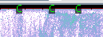
This overlay displays the letter "C" near the upper edge of the echogram at the location of a comment. This symbol has a context menu with options for editing and deleting the comment. The context menu for the echogram has an item for adding new comments.
Comments are also displayed on the map and in the comment module.
Comments are stored in the database ObservationComment table.
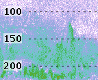
This overlay shows equidistant horizontal lines stretching across the echogram. The depth corresponding to each line is written to the left. For the bottom echogram, these numbers are distance from the bottom.
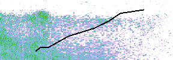
This overlay draws geometric shapes defined in file draw data files.
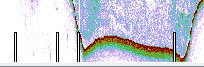
This overlay shows white markers at the bottom of the echogram at the start of each data file. This corresponds to the file markers on the map.
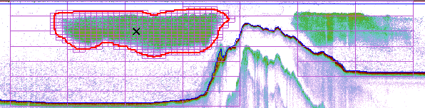
This overlay displays the grids as defined in the [Survey configuration - Grid]. The grid is displayed when the mouse is over one of the buttons for storing and deleting in the interpretation window.
When the mouse is over the store button, this overlay displays the grid cells that will be stored to the database.
When the mouse is over the delete button, this overlay displays the stored grid cells that will be deleted from the database.
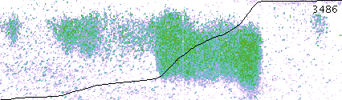
This overlay draws the integration line for the selected regions if the sA > 0. Only data from the visible part of the echogram is used even if the regions extend further. The steepness of this line indicates how much the corresponding pings are contribution to the sA.
The integration line is given by the function f(ping) = sV integrated over the visible area of the selected regions to the left of that ping. This function is scaled so that the line extends from the bottom to the top of the echogram whatever the actual integration value is.
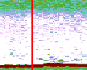
This overlay displays a red vertical line corresponding to the mouse position in the map.
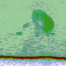
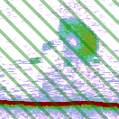
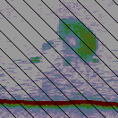
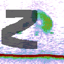
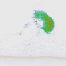
This overlay displays several kinds of semi-transparent masks on the echogram.
Areas that are stored to the database are displayed with a green color. These green areas correspond to the areas covered by stored grid cells for the current frequency. The vertical line overlay also indicates stored areas by using green numbers. The map also shows the stretches along the survey path that are stored.
Areas that are not stored to the database, but where storing settings are defined, are displayed with green diagonal lines.
Ranges that are excluded from storing to the database are displayed gray with black diagonal lines. Grid cells that overlap partly with an excluded range will be shortened before stored to the database.
Frequency-dependent deleting of data is shown using semi-transparent gray overlay. The deleting can be edited using the toolbar button. The deleting is done only on the current frequency. Data from the deleted areas are not used in computations of sA.
Conditional masking is displayed with a gray color.
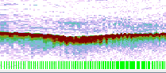
This overlay shows the start of each loaded ping as green lines at the bottom of the echogram.
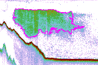
This overlay displays regions that are automatically detected during preprocessing. These regions are drawn with a purple line. They are not used in the interpretation. The context menu for these regions includes an item for conversion to a school region that can be used in the interpretation.
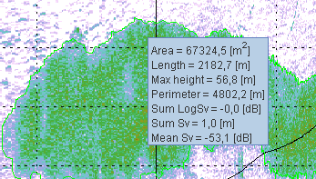
The preprocessed regions overlay has a specialized tooltip giving some parameters for the school as shown above.
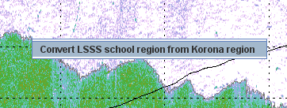
There is also a specialized context menu for converting to a school that can be used in the interpretation. The conversion can be applied multiple times, under the restriction that interpretable schools cannot overlap.
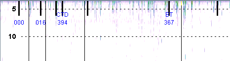
This overlay displays information from the reference log data files.
The following stations are shown with station abbreviation and station number:
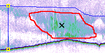
This overlay displays layers and schools. Active regions are red, the other are blue.
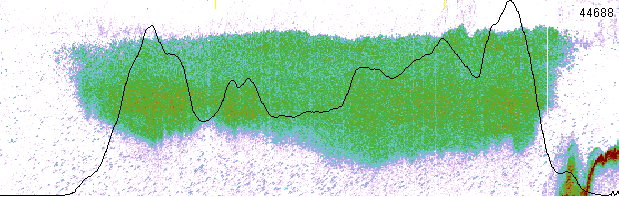
This overlay draws the sA line for the selected region.
This function is scaled so that the line extends from the bottom to the top of the echogram whatever the actual integration value is. The integration of this function corresponds to the integration line. The sA is also represented in the map.
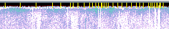
This overlay shows equidistant yellow markers at the top of the echogram. The distance between the lines and the unit used (Ping / Distance / Time) can be configured.
The default tick interval is 10 minutes.
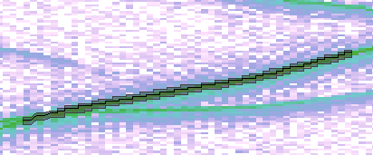
This overlay displays detected tracks. Parts of tracks that are visually edited are displayed with a dashed line.
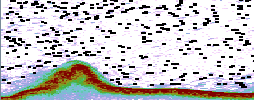
This overlay displays the locations of the TS detections done by the TS module. Each detection is shown as a black horizontal line. NB: This overlay should be used with caution since it may cause the system to run slower.
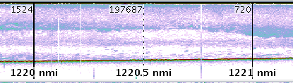
This overlay shows equidistant vertical lines stretching from top to bottom of the echogram. A line is drawn
At the bottom of each line is textual information about the corresponding distance and time.
Each line also displays sA values for the regions it intersects. These values are calculated for the visible area of the region between two successive lines. At the end of each region, the sA values for both the visible area from the previous intersecting line and for the entire visible part of the region are displayed. If the visible part of the region is completely contained in the area between two successive lines these values are equal and hence displayed only once. In addition, sL for the entire region is displayed, where sL = sA*L and L is the length of the region in the chosen horizontal grid unit. If the sA value for the entire visible part of the region is exactly 0, then no values are displayed.
The color of the sA / sL values for a region is
There are several sA and sL numbers in the echogram below. sA is always shown just prior to the vertical live. If there are three numbers by the vertical line, the second and third are averages sA and sL of the visible part of the region respectively. Numbers on a white background indicate that the region has been inspected using the Interpretation window, i.e. it has been active. Numbers on a black background, as some of the numbers in the figure below, indicate that the region has never been active (and is therefore not yet scrutinized).
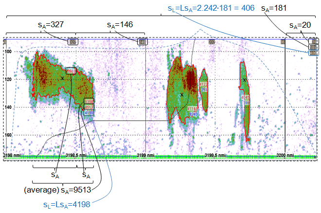